This page outlines some visualization best practices involving color. This is not a comprehensive visualization guide; rather, it is intended as an instruction tool for helping you get started with choosing the most appropriate color ramps for your maps using the Esri color ramps guide.

Each color ramp provided to you in the Esri color ramps guide contains one or more tags describing:
- the colors included in the ramp (e.g.
reds,greens,blues, etc.), - the subject of the ramp (e.g.
bright,subdued), - the best background for the ramp (e.g.
dark,light), and - the theme or the intended use of the ramp (e.g.
sequential,diverging,categorical, etc.)
Colors
Relevant tags: blues, browns, categorical, grays, greens, oranges, pinks, purples, reds, yellows
If your visualization must match a predefined theme using a set of colors, you may filter ramps by those colors using the appropriate tags. In the image below, we discovered three ramps, each with four colors containing both green and orange hues. Click the Copy hex values button in the ramp's card to copy the hex values in the ramp to your clipboard.
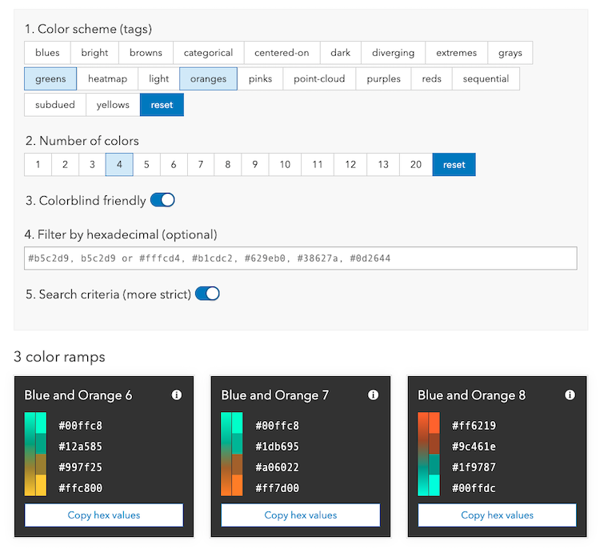
You can also view additional information about the ramp by clicking the i icon in the top right corner of the card. A modal will open, allowing you to copy either the hex or RBGA values to the clipboard. You can also see all tags that apply to the selected ramp.
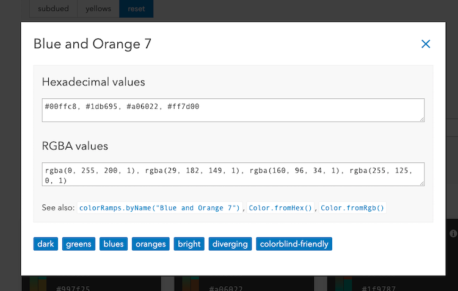
You also have the ability to search ramps by hex code.
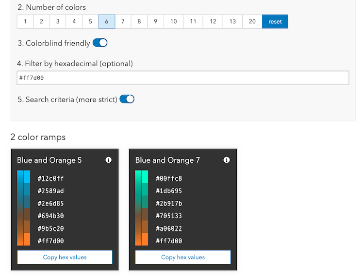
Subject
Relevant tags: bright, subdued
Your map’s subject is the first thing to think about when choosing a color ramp. Bright color ramps can be used to draw attention to the most important values, such as values which should raise alarm to the reader. Bright color ramps can also add playfulness to a map’s subject.
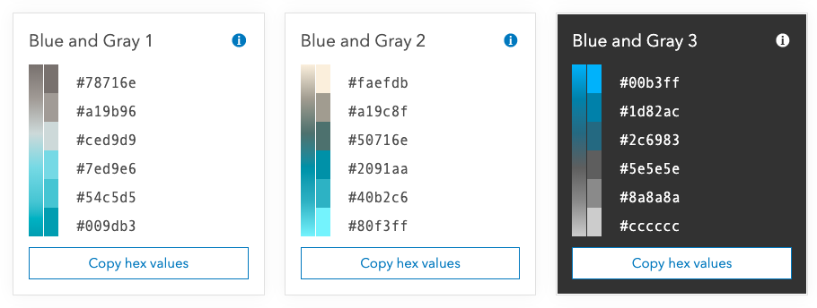
Subdued color ramps are useful for serious topics and conservative audiences.
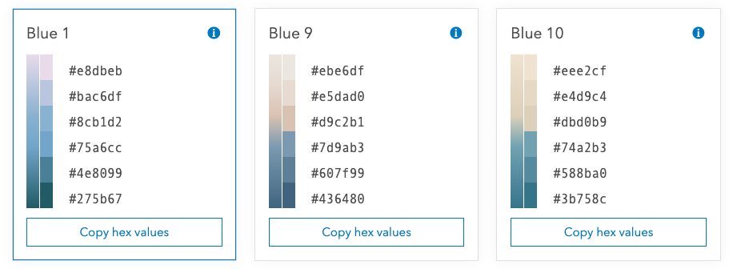
Once you choose a color ramp, go back and check your layer’s settings to ensure that meaningful values are used to define how the colors are applied. A meaningful value is one the reader needs to understand about the map’s subject. The best maps use meaningful values based on what a subject matter expert shares about the topic, or what you research about it.
Background
Relevant tags: dark, light
Your color ramps will appear on a layer drawn on top of a basemap serving as the map’s background. Basemaps can be colorful or monochrome, dark or light.
Ramps that are best for dark backgrounds have a dark end for low values and a bright, saturated end for high values. The bright areas stand out while the dark areas fade into the basemap. The ramp can be flipped if you want to draw attention to the low values.
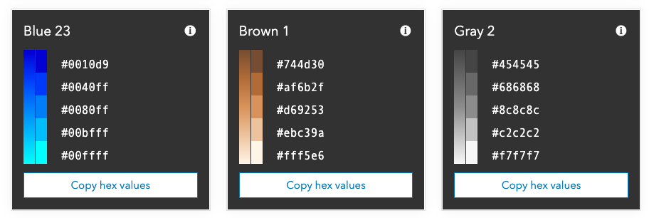
The example below uses the Blue 21 dark ramp to visualize the percentage of voters in each U.S. voting precinct that voted for the Democratic candidate in a presidential election.
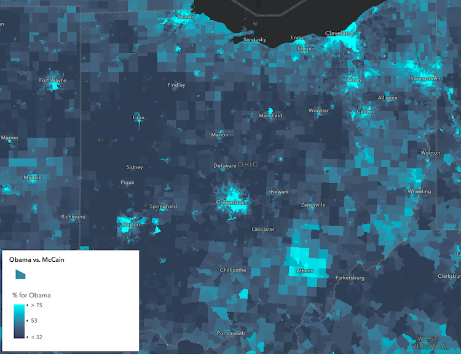
Ramps that are best for light backgrounds have a light end for low values and a darker, saturated end for high values. The darker areas stand out while the light areas fade into the basemap. The ramp can be flipped if you want to draw attention to the low values.
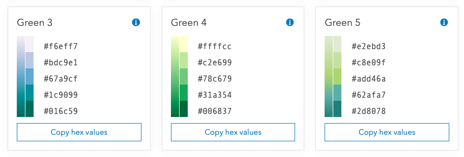
The example below uses the Blue 3 light ramp to visualize the same variable, but against a light basemap.
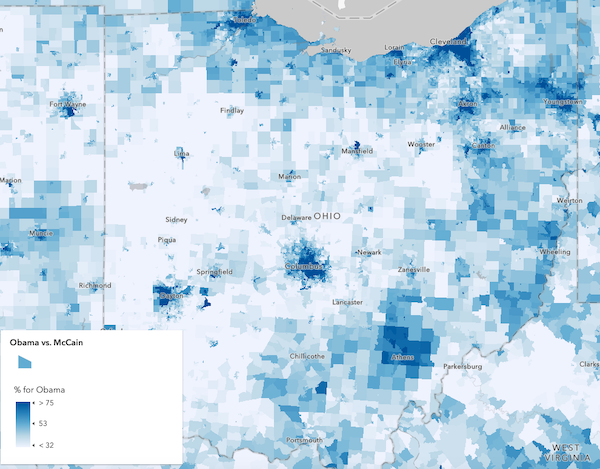
Theme
Relevant tags: categorical, centered-on, diverging, extremes, heatmap, point-cloud, sequential
The theme of the visualization determines which pattern or sequence of colors makes the most sense for your visualization. For example, a sequential theme would confuse the map reader if used to visualize distinct values. Each color ramp was designed for specific themes and should therefore not be used in themes for which they are not intended.
Categorical ramps use distinct colors to distinguish categories or types of data (e.g. string data). These ramps should only be used in visualizations built using a UniqueValueRenderer.
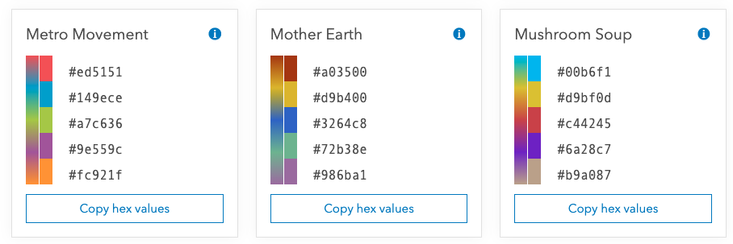
The example below visualizes U.S. counties based on the winning candidate in a U.S. presidential election using the Pastel Dreams categorical ramp in a UniqueValueRenderer.
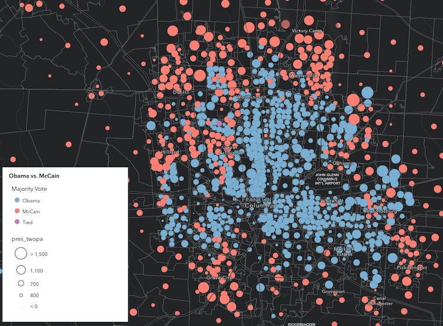
See the Visualize features by type sample to learn how to use these colors in the context of a UniqueValueRenderer.
Sequential ramps are built with two starting colors: a strong color for high values, and a light color for low values. Maps that use sequential ramps are valuable because they focus attention primarily on just one part of the data (the high values). The ramp can be flipped if you want to draw attention to the low values. These ramps were exclusively designed for visualizations using a ClassBreaksRenderer or Color visual variable.
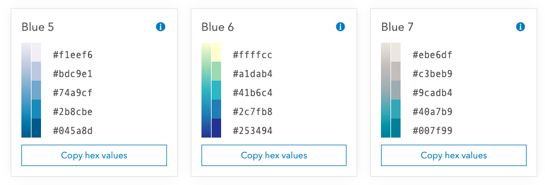
The example below uses the Blue 21 dark ramp to visualize the percentage of voters in each U.S. voting precinct that voted for the Democratic candidate in a presidential election.
See the Data-driven continuous color sample to learn how to use the colors in any color ramp inside a color visual variable.
Centered-on ramps use a single hue with opacity to focus, or center on, a particular meaningful value.
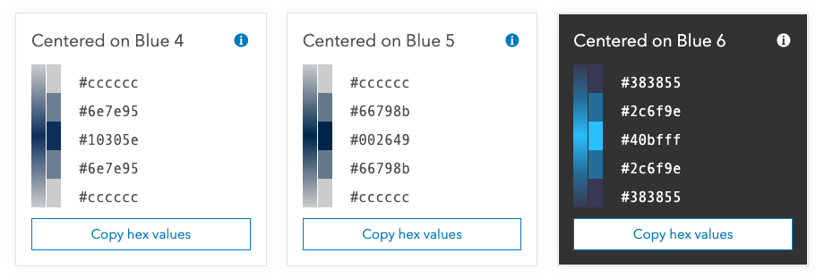
The example below visualizes the percent difference in votes for opposing candidates in a U.S. presidential election using the Centered on Yellow 1 dark color ramp. With the centered on theme, we can view highly contested areas between the two candidates. These ramps were exclusively designed for visualizations using a Color visual variable.
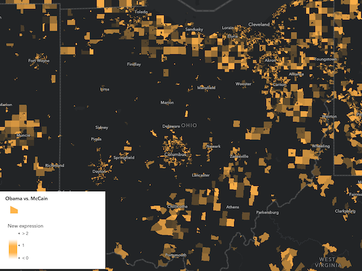
Diverging ramps are built with three starting colors: a strong color for high values, a strong color for low values, and a dark center (best for dark backgrounds) or a light center (best for light backgrounds). Maps that use the diverging ramps are valuable because they can draw attention to what’s considered “high” values as well as “low” values, centered around a mean or other definition of “normal” values.
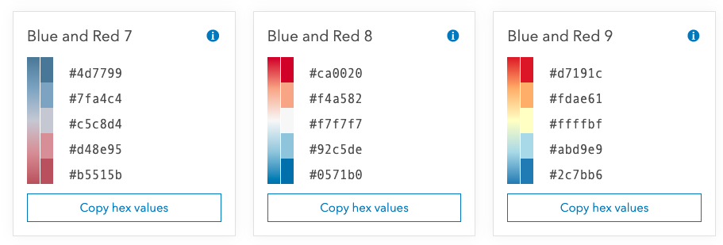
The example below visualizes the percent change in votes for the Democratic candidate in a U.S. presidential election between two election years using the Blue and Yellow 9 diverging ramp. The meaningful center value in this map is 0. Anything positive (or blue) in the map indicates counties where the Democratic candidate improved from the previous election. Negative areas highlighted in yellow indicate counties where the Democratic candidate lost votes in the most recent election.
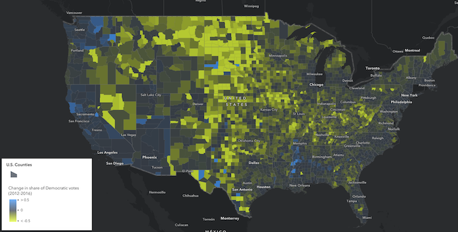
See the Generate continuous color visualization sample to learn how to use these colors in a color visual variable.
Continuous color and class breaks
All visualizations take time and detail to get right. In fact, all visualization techniques expose some kind of bias. This is especially true when deciding whether to use classification or continuous colors in your visual. It is the obligation of the map maker to make an informed choice on which method to use and how to transparently communicate the benefits and problems with the visualization to the end user.
Note the following excerpt from the blog, Better Breaks Define Your Map’s Purpose:
Various classification methods dramatically shift the color around the map. If it makes you feel a little uncomfortable that there are so many options with widely varying effects, that’s good, because your next step is to take control of where and when color is applied to the map, based on your purpose...The person making the map is in a position to decide if classification is appropriate. It’s not a matter of one being right and another wrong, but it is a matter of knowing how classification tends to eliminate detail, and whether detail is important to the story your map needs to reveal.
For example, if authorities caution that children should not drink well water with more than 10 mg/liter of nitrates, your map reader needs to clearly see that threshold represented in the map. Since 0 mg/liter would be the lower bound for the color ramp, and 10 mg/liter could be where a strong red color gets applied. A value of 30 mg/liter is also regarded as significant since it is three times the threshold value. If the purpose of the map is to show all the data, it makes sense to use a diverging color ramp using colors that indicate where the water is OK to drink, and where it is not (see the first ramp below). In the second example, only those values at nearly 3x the threshold earn the dark purple color, and the threshold value itself (10 mg/liter) has no special color indicated.
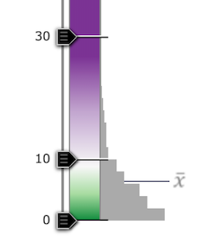 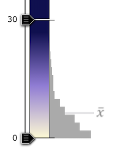
These versions below use 3 discrete classes to simplify the map. All values 10 – 30 get the same color, so even though a value of 28 is twice the value of 14, they receive the same color. Note that variation in the data is obscured by this approach.
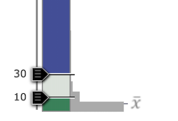 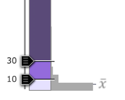
Read more about these considerations in Better Breaks Define Your Map’s Purpose.